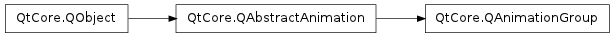

QAnimationGroup ¶

Inherited by: QSequentialAnimationGroup , QParallelAnimationGroup
Note
This class was introduced in Qt 4.6
Synopsis ¶
Functions ¶
- def addAnimation (animation)
- def animationAt (index)
- def animationCount ()
- def clear ()
- def indexOfAnimation (animation)
- def insertAnimation (index, animation)
- def removeAnimation (animation)
- def takeAnimation (index)
Detailed Description ¶
The PySide.QtCore.QAnimationGroup class is an abstract base class for groups of animations.
An animation group is a container for animations (subclasses of PySide.QtCore.QAbstractAnimation ). A group is usually responsible for managing the state of its animations, i.e., it decides when to start, stop, resume, and pause them. Currently, Qt provides two such groups: PySide.QtCore.QParallelAnimationGroup and PySide.QtCore.QSequentialAnimationGroup . Look up their class descriptions for details.
Since PySide.QtCore.QAnimationGroup inherits from PySide.QtCore.QAbstractAnimation , you can combine groups, and easily construct complex animation graphs. You can query PySide.QtCore.QAbstractAnimation for the group it belongs to (using the PySide.QtCore.QAbstractAnimation.group() function).
To start a top-level animation group, you simply use the PySide.QtCore.QAbstractAnimation.start() function from PySide.QtCore.QAbstractAnimation . By a top-level animation group, we think of a group that itself is not contained within another group. Starting sub groups directly is not supported, and may lead to unexpected behavior.
PySide.QtCore.QAnimationGroup provides methods for adding and retrieving animations. Besides that, you can remove animations by calling remove() , and clear the animation group by calling PySide.QtCore.QAnimationGroup.clear() . You may keep track of changes in the group’s animations by listening to QEvent.ChildAdded and QEvent.ChildRemoved events.
PySide.QtCore.QAnimationGroup takes ownership of the animations it manages, and ensures that they are deleted when the animation group is deleted.
See also
PySide.QtCore.QAbstractAnimation PySide.QtCore.QVariantAnimation The Animation Framework
- class PySide.QtCore. QAnimationGroup ( [ parent=None ] ) ¶
-
Parameters: parent – PySide.QtCore.QObject Constructs a PySide.QtCore.QAnimationGroup . parent is passed to PySide.QtCore.QObject ‘s constructor.
- PySide.QtCore.QAnimationGroup. addAnimation ( animation ) ¶
-
Parameters: animation – PySide.QtCore.QAbstractAnimation Adds animation to this group. This will call insertAnimation with index equals to PySide.QtCore.QAnimationGroup.animationCount() .
Note
The group takes ownership of the animation.
- PySide.QtCore.QAnimationGroup. animationAt ( index ) ¶
-
Parameters: index – PySide.QtCore.int Return type: PySide.QtCore.QAbstractAnimation Returns a pointer to the animation at index in this group. This function is useful when you need access to a particular animation. index is between 0 and PySide.QtCore.QAnimationGroup.animationCount() - 1.
- PySide.QtCore.QAnimationGroup. animationCount ( ) ¶
-
Return type: PySide.QtCore.int Returns the number of animations managed by this group.
- PySide.QtCore.QAnimationGroup. clear ( ) ¶
-
Removes and deletes all animations in this animation group, and resets the current time to 0.
- PySide.QtCore.QAnimationGroup. indexOfAnimation ( animation ) ¶
-
Parameters: animation – PySide.QtCore.QAbstractAnimation Return type: PySide.QtCore.int Returns the index of animation . The returned index can be passed to the other functions that take an index as an argument.
- PySide.QtCore.QAnimationGroup. insertAnimation ( index , animation ) ¶
-
Parameters: - index – PySide.QtCore.int
- animation – PySide.QtCore.QAbstractAnimation
Inserts animation into this animation group at index . If index is 0 the animation is inserted at the beginning. If index is PySide.QtCore.QAnimationGroup.animationCount() , the animation is inserted at the end.
Note
The group takes ownership of the animation.
- PySide.QtCore.QAnimationGroup. removeAnimation ( animation ) ¶
-
Parameters: animation – PySide.QtCore.QAbstractAnimation Removes animation from this group. The ownership of animation is transferred to the caller.
- PySide.QtCore.QAnimationGroup. takeAnimation ( index ) ¶
-
Parameters: index – PySide.QtCore.int Return type: PySide.QtCore.QAbstractAnimation Returns the animation at index and removes it from the animation group.
Note
The ownership of the animation is transferred to the caller.